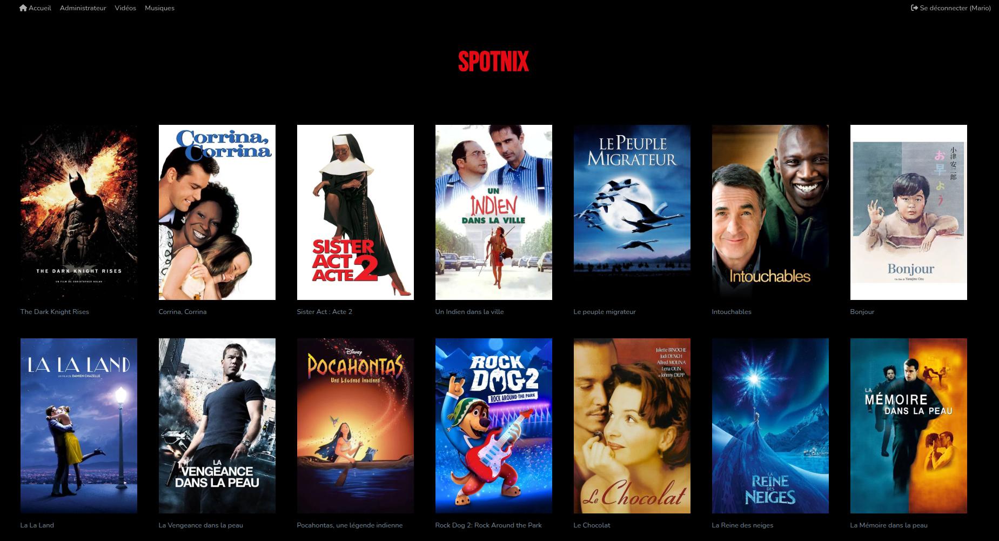

Extrait de code
def recuperer_metadonnees_tmdb(titre_film):
# clé API TMDb
tmdb.API_KEY = settings.TMDB_API_KEY
print(f"clé: ", tmdb.API_KEY)
"""
Recherche un film par titre sur TMDb et retourne ses métadonnées principales.
Args:
titre_film (str): titre du film à rechercher.
Returns:
dict ou None: Dictionnaire avec titre, année, affiche, synopsis, ou None si non trouvé.
"""
recherche = tmdb.Search()
reponse = recherche.movie(query=titre_film, language='fr-FR')
results = reponse.get('results', [])
if not results:
return None
film = results[0] # prendre le premier résultat
# Récupérer les détails du film
movie = tmdb.Movies(film['id'])
details = movie.info(language='fr-FR') # détails en français
genres = [genre['name'] for genre in details.get('genres', [])] # liste des genres
duree = details.get('runtime') # durée en minute
return {
'titre': details.get('title'),
#'annee': details.get('release_date', '')[:4],
'affiche': f"https://image.tmdb.org/t/p/w500{details.get('poster_path')}" if details.get('poster_path') else None,
#'synopsis': details.get('overview'),
#'genre': genres,
#'duree': duree,
'id_tmdb': details.get('id') # ID TMDb pour requêtes future
}
{% if not hide_footer_nav %}
{% endif %}
{##}
{% if messages %}
{% for text in messages %}
{% endfor %}
{% endif %}
{% block content %}
{% endblock content %}
{% if not hide_footer_nav %}
{% endif %}
{% block javascript %}
{% endblock javascript %}
:root {
--color-nav: #347D39;
--color-card: #065A82;
--color-red: #e50914; /* rouge Netflix */
--color-font-white: #f8f8ff;
--color-font-nav: #afafaf;
--couleur-secondaire: #00A0D4;
}
.logo {
font-family: 'Bebas Neue', sans-serif;
font-size: 64px;
color: var(--color-red);
text-shadow: 2px 2px 4px rgba(0,0,0,0.9);
background-color: black;
padding: 20px;
display: inline-block;
}
.background {
position: absolute;
top: 0;
left: 0;
width: 100%;
height: 100%;
background: black;
filter: blur(0px);
z-index: -1;
}
/******************************** ALERTES MESSAGES **************************************/
.alert-container, .alert, .alert-error, .alert-success {
position: fixed;
display: flex;
z-index: 1;
height: 26px;
justify-content: center;
align-items: center;
width: 101%;
pointer-events: none; /* Désactive les événements de pointer pour que les clics passent à travers */
margin-top: 6px;
color: ghostwhite;
}
.alert-error {
background-color: #a80e1c;
}
.alert-success {
background-color: rgba(36, 109, 143, 0.5);
}
/*#########################################################################*/
// Attendre que le DOM soit complètement chargé
document.addEventListener('DOMContentLoaded', function () {
// Sélectionner le conteneur de messages
const messageContainer = document.querySelector('.alert-container');
// Si le conteneur de messages existe
if (messageContainer) {
// setTimeout(function() {
messageContainer.classList.add('message');
// Cacher les messages après 3 secondes (3000 millisecondes)
setTimeout(function () {
messageContainer.style.display = 'none';
}, 5000);
}
});